# Set the R library to load packages from
.libPaths("/fs/ess/PAS0471/jelmer/R/metabar")
dyn.load("/fs/ess/PAS0471/jelmer/software/GLPK/lib/libglpk.so.40", local = FALSE)Intro to network analysis
1 Setting up
If you need to start a new RStudio Server session at OSC or open your RStudio Project, see the box below.
Start an RStudio Server job at OSC & open your RStudio Project (Click to expand)
Start an RStudio Server job
- Log in to OSC at https://ondemand.osc.edu.
- Click on
Interactive Apps(top bar) and thenRStudio Server(all the way at the bottom). - Fill out the form as follows:
- Cluster:
Pitzer - R version:
4.3.0 - Project:
PAS2714 - Number of hours:
4 - Node type:
any - Number of cores:
4
- Cluster:
- Click
Launchand once your job has started, clickConnect to RStudio Server.
Open your RStudio Project
- Your RStudio Project at
/fs/ess/PAS2714/users/<user>may have automatically opened. You can see whether a Project is open, and if so, which one, in the top-right of your screen (left screenshot below) - If your Project isn’t open, click on the R-in-a-box icon to open it (right screenshot below):

jelmer is open.Your Project name is also your username.

Create a new script (Optional)
Click File > New file > R script, and immediately save the new file (File > Save as) as networks.R inside your scripts directory1.
We recommend that you copy-and-paste (or type, if you prefer) code from this webpage into your script and then execute the code. That way, you’ll have a nice record of what you did, exactly.
Load packages
# Load the packages (package startup messages are not printed below)
library(ggnetwork)
library(phyloseq)
library(NetCoMi)Load the phyloseq object
# Loading data from RDS
bac22rot_phy <- readRDS("results/ps_fulldata/bac22rot_w_ASV.rds")2 Network analysis
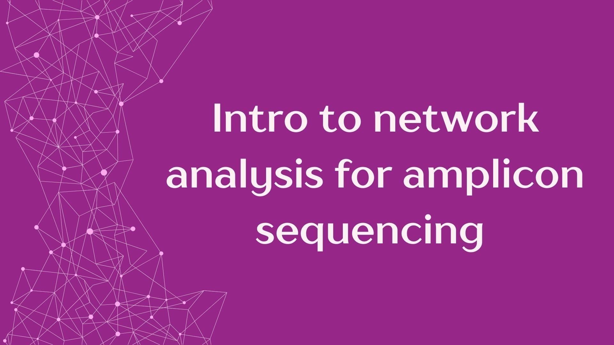
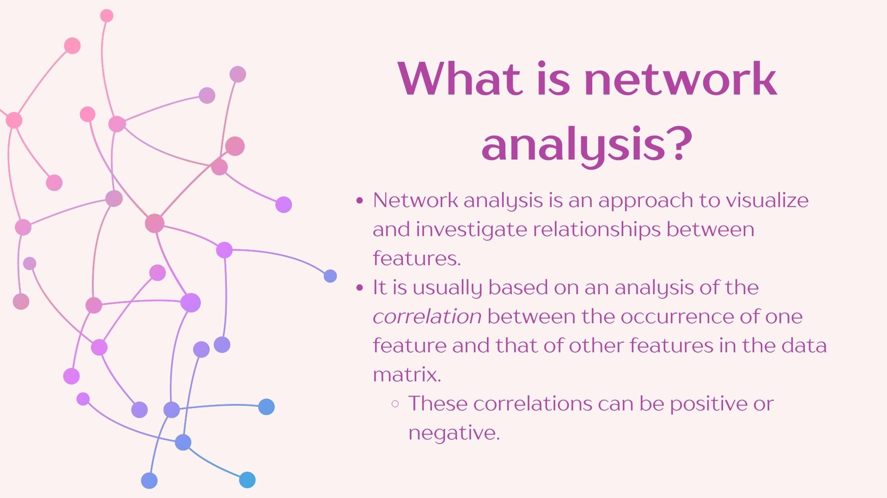
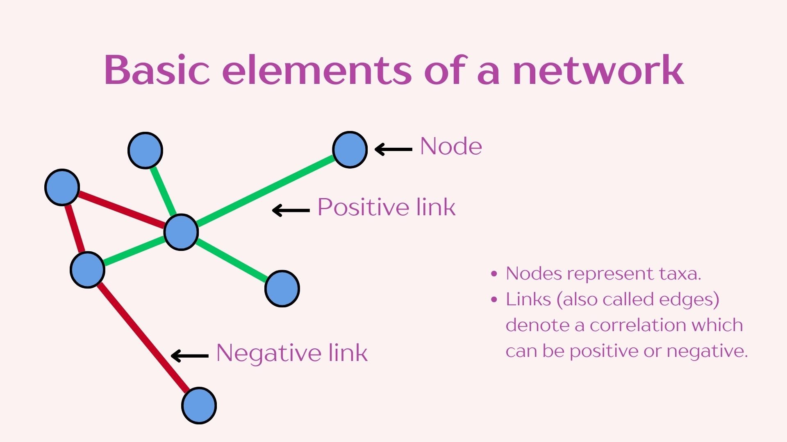
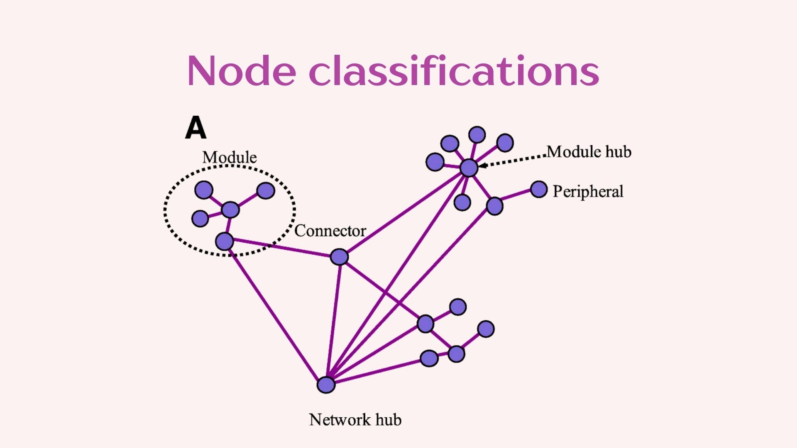
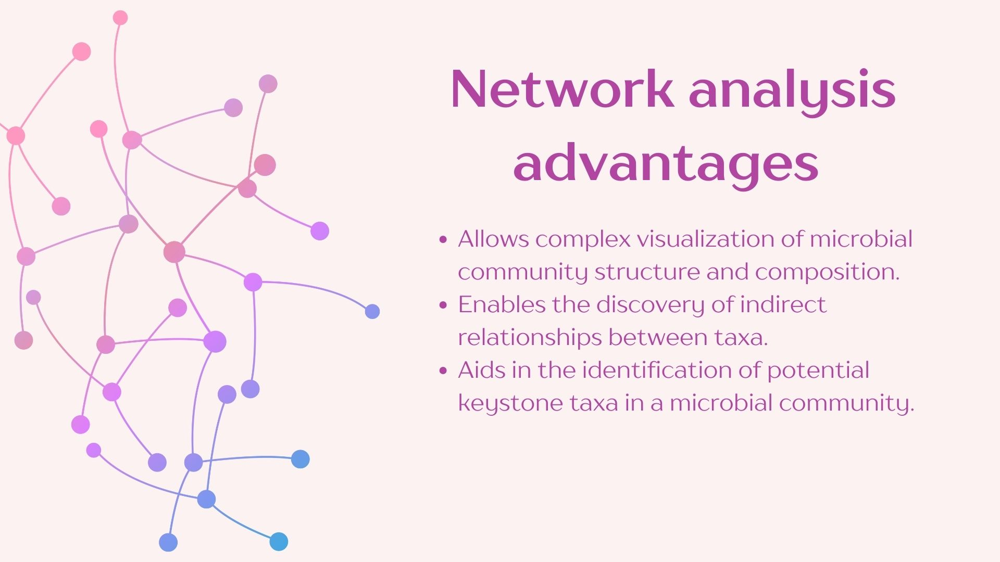
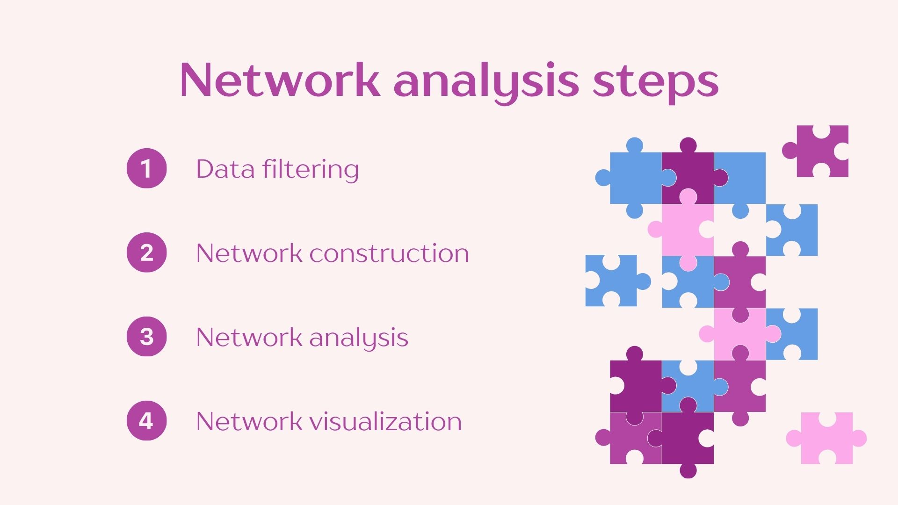
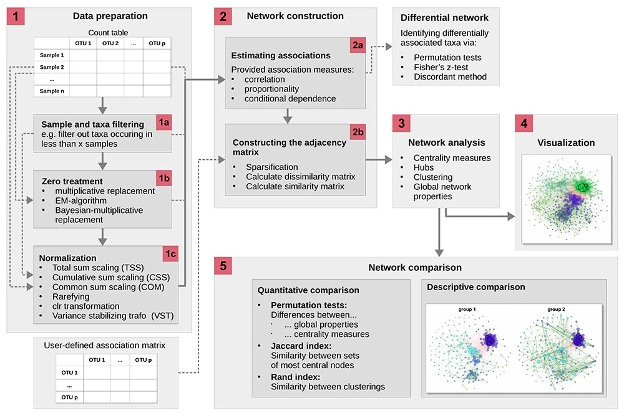
2.1 Data filtering and network construction
In constructing networks it is important to understand that different questions will require different network construction parameters. It is also imperative to understand the biology of your system to select the most optimal parameters. We will be using the “NetCoMi” package which has great flexibility for network construction and includes the documentation of the available methods which allows you to decide which is more appropriate for your data.
Here we will select the method by which to construct your network. It is recommended to filter out low abundance taxa as they may increase the noise in the network. In this example only the 50 most frequent taxa will be included in the network. Additionally we will be filtering samples with less than 500 reads to exclude those with poor sequencing depth. We will select the methods to normalize our data, to handle zeros and to calculate correlations.
For this exercise we will analyze the differences in the bacterial networks from different Rotation schemes.
# Get group names to parse onto network construction
group_vec <- get_variable(bac22rot_phy, "Rotation")
# Construct the network
bac22rot_net <- netConstruct(bac22rot_phy,
group = group_vec,
filtTax = "highestFreq",
filtTaxPar = list(highestFreq = 50),
filtSamp = "totalReads",
filtSampPar = list(totalReads = 500),
zeroMethod = "pseudo",
normMethod = "clr",
measure = "pearson",
sparsMethod = "none",
dissFunc = "signed",
verbose = 0,
seed = 123456)
Important
To ensure reproducibility of your network it is useful to set a seed in your settings, this will ensure that your network is constructed from the same starting point in the data each time you run the analysis.
2.2 Network analysis
We will now analyze the constructed network. This will evaluate network features and compare them between the two rotation groups.
bac22rot_net_aly <- netAnalyze(bac22rot_net,
clustMethod = "cluster_fast_greedy",
graphlet = FALSE,
verbose = 0)Let’s look at a summary of our analysis:
summary(bac22rot_net_aly)
Component sizes
```````````````
group '1':
size: 50
#: 1
group '2':
size: 50
#: 1
______________________________
Global network properties
`````````````````````````
Whole network:
group '1' group '2'
Number of components 1.00000 1.00000
Clustering coefficient 1.00000 1.00000
Modularity -0.01122 -0.00994
Positive edge percentage 48.97959 49.38776
Edge density 1.00000 1.00000
Natural connectivity 0.26863 0.27515
Vertex connectivity 49.00000 49.00000
Edge connectivity 49.00000 49.00000
Average dissimilarity* 0.68935 0.68548
Average path length** 1.00000 1.00000
-----
*: Dissimilarity = 1 - edge weight
**: Path length = Units with average dissimilarity
______________________________
Clusters
- In the whole network
- Algorithm: cluster_fast_greedy
````````````````````````````````
group '1':
name: 1 2 3
#: 3 26 21
group '2':
name: 1 2
#: 29 21
______________________________
Hubs
- In alphabetical/numerical order
- Based on empirical quantiles of centralities
```````````````````````````````````````````````
group '1' group '2'
ASV_1844 ASV_1844
ASV_495 ASV_4655
ASV_7847 ASV_495
______________________________
Centrality measures
- In decreasing order
- Computed for the complete network
````````````````````````````````````
Degree (weighted):
group '1' group '2'
ASV_1844 16.92708 18.07274
ASV_7847 16.75325 17.44148
ASV_495 16.61202 17.69533
ASV_2483 16.49384 16.76725
ASV_3076 16.43838 16.48473
______ ______
ASV_1844 16.92708 18.07274
ASV_4655 16.23069 17.89275
ASV_495 16.61202 17.69533
ASV_2545 16.32365 17.55958
ASV_7847 16.75325 17.44148
Betweenness centrality (normalized):
group '1' group '2'
ASV_2635 0 0
ASV_4082 0 0
ASV_4478 0 0
ASV_7160 0 0
ASV_4073 0 0
______ ______
ASV_2635 0 0
ASV_4082 0 0
ASV_4478 0 0
ASV_7160 0 0
ASV_4073 0 0
Closeness centrality (normalized):
group '1' group '2'
ASV_1844 1.2906 1.33475
ASV_495 1.23341 1.29123
ASV_2545 1.21956 1.26471
ASV_4203 1.21741 1.19035
ASV_4252 1.20403 1.22981
______ ______
ASV_1844 1.2906 1.33475
ASV_495 1.23341 1.29123
ASV_4059 1.1992 1.28898
ASV_4655 1.16709 1.26733
ASV_2545 1.21956 1.26471
Eigenvector centrality (normalized):
group '1' group '2'
ASV_1844 1 1
ASV_7847 0.98549 0.96245
ASV_495 0.98072 0.97834
ASV_2483 0.96967 0.91308
ASV_4203 0.96695 0.92841
______ ______
ASV_1844 1 1
ASV_4655 0.95644 0.9859
ASV_495 0.98072 0.97834
ASV_2545 0.96178 0.9686
ASV_7847 0.98549 0.96245We see no significant differences between these networks, however we can visualize the networks and think about the results of our whole network measures in the analysis output.
I have compiled and simplified the following definitions using NetCoMi’s documentation to facilitate this practice however I recommend reading through the whole publication if you plan on using this approach in your own analyses. Reference: https://doi.org/10.1093/bib/bbaa290
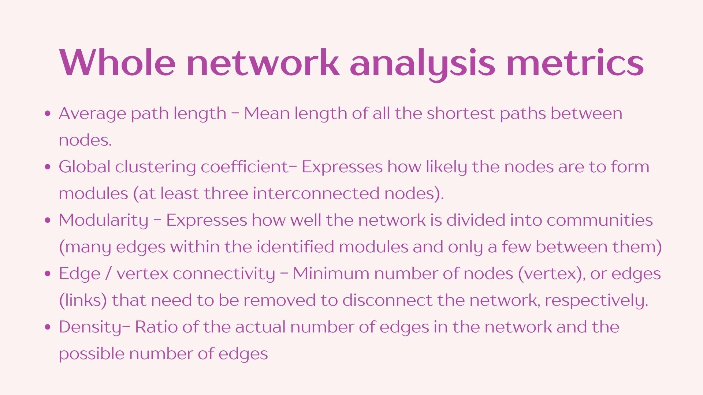
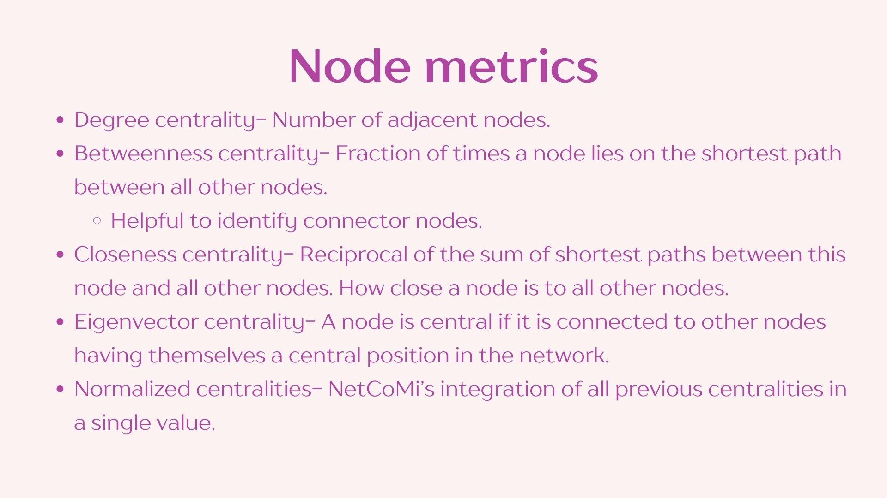
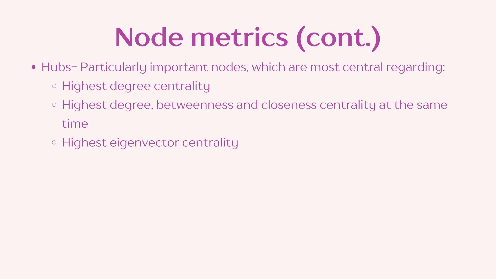
2.3 Network visualization
Now we can plot our networks to look at their structure.
# Get number of modules to select colors
bac22rot_nclust <- as.numeric(max(names(table(bac22rot_net_aly$clustering$clust1))))
# Set color palette
col <- c(topo.colors(bac22rot_nclust), rainbow(6))
# Plot network
plot(bac22rot_net_aly,
colorVec = col,
borderCol = "gray40",
nodeSize = "mclr",
nodeSizeSpread = 3,
labelScale = TRUE,
edgeTranspLow = 80,
edgeTranspHigh = 50,
groupNames = c("CS", "CSW"),
showTitle = TRUE,
cexTitle = 1.2,
mar = c(1,1,3,1),
repulsion = 0.9,
shortenLabels = "simple",
rmSingles = "inboth",
nodeFilter = "clustMin",
nodeFilterPar = 10,
nodeTransp = 50,
hubTransp = 30)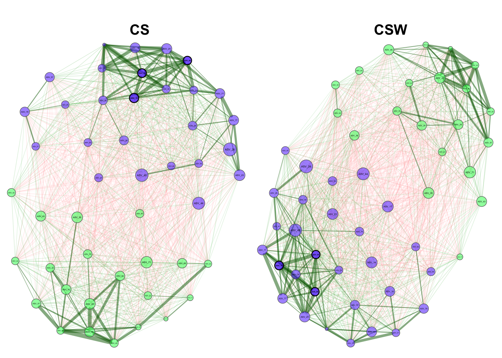
3 Differential network analysis
Although our networks do not significantly differ in overall structure, the node associations within the networks may differ in two ways:
- The direction of their relationship and/or
- The strength of the correlation.
To assess this, we can perform a differential network analysis. Again, we will focus on the effect of Rotation.
# Subsetting our data into their respective Rotations
CSW_subset <- phyloseq::subset_samples(bac22rot_phy, Rotation != "CS")
CS_subset <- phyloseq::subset_samples(bac22rot_phy, Rotation == "CS")
# Construct the differential network
diff_net_const <- netConstruct(CSW_subset, CS_subset,
filtTax = "highestVar",
filtTaxPar = list(highestVar = 75),
zeroMethod = "pseudo",
normMethod = "clr",
measure = "pearson",
verbose = 1,
thresh = 0.3)Data filtering ...55 taxa and 14 samples remaining in group 1.55 taxa and 16 samples remaining in group 2.# Analyze the network
diff_net_const_aly <- netAnalyze(diff_net_const,
clustMethod = "cluster_fast_greedy",
graphlet = FALSE,
verbose = 0)# Compare the analysis of the networks
comp_nem <- netCompare(bac22rot_net_aly,
permTest = FALSE,
verbose = FALSE,
seed = 12345)Now we can asses our results. This analysis now shows that the eigenvector centrality of the most central nodes in the differential network are significantly different from each other. This means that the most central nodes in the CS rotation network are more interconnected within their network than the most central nodes in the CSW rotation network.
summary(comp_nem,
groupNames = c("CS", "CSW"),
showCentr = c("degree", "between", "closeness"),
numbNodes = 5)
Comparison of Network Properties
----------------------------------
CALL:
netCompare(x = bac22rot_net_aly, permTest = FALSE, verbose = FALSE,
seed = 12345)
______________________________
Global network properties
`````````````````````````
Whole network:
CS CSW difference
Number of components 1.000 1.000 0.000
Clustering coefficient 1.000 1.000 0.000
Modularity -0.011 -0.010 0.001
Positive edge percentage 48.980 49.388 0.408
Edge density 1.000 1.000 0.000
Natural connectivity 0.269 0.275 0.007
Vertex connectivity 49.000 49.000 0.000
Edge connectivity 49.000 49.000 0.000
Average dissimilarity* 0.689 0.685 0.004
Average path length** 1.000 1.000 0.000
-----
*: Dissimilarity = 1 - edge weight
**: Path length = Units with average dissimilarity
______________________________
Jaccard index (similarity betw. sets of most central nodes)
```````````````````````````````````````````````````````````
Jacc P(<=Jacc) P(>=Jacc)
degree 0.529 0.972716 0.075475 .
betweenness centr. 0.000 1.000000 1.000000
closeness centr. 0.529 0.972716 0.075475 .
eigenvec. centr. 0.625 0.995960 0.015945 *
hub taxa 0.500 0.888889 0.407407
-----
Jaccard index in [0,1] (1 indicates perfect agreement)
______________________________
Adjusted Rand index (similarity betw. clusterings)
``````````````````````````````````````````````````
wholeNet LCC
ARI 0.471 0.471
p-value 0.000 0.000
-----
ARI in [-1,1] with ARI=1: perfect agreement betw. clusterings
ARI=0: expected for two random clusterings
p-value: permutation test (n=1000) with null hypothesis ARI=0
______________________________
Graphlet Correlation Distance
`````````````````````````````
wholeNet LCC
GCD 0 0
-----
GCD >= 0 (GCD=0 indicates perfect agreement between GCMs)
______________________________
Centrality measures
- In decreasing order
- Computed for the whole network
````````````````````````````````````
Degree (weighted):
CS CSW abs.diff.
ASV_4348 15.972 13.665 2.307
ASV_5760 14.470 16.598 2.128
ASV_4391 15.337 13.338 2.000
ASV_1425 14.393 16.203 1.810
ASV_4470 15.933 14.181 1.752
Betweenness centrality (normalized):
CS CSW abs.diff.
ASV_2635 0 0 0
ASV_4082 0 0 0
ASV_4478 0 0 0
ASV_7160 0 0 0
ASV_4073 0 0 0
Closeness centrality (normalized):
CS CSW abs.diff.
ASV_2806 1.016 1.245 0.229
ASV_4082 1.028 1.191 0.163
ASV_4642 1.185 1.057 0.129
ASV_5760 1.024 1.147 0.123
ASV_4655 1.167 1.267 0.100
_________________________________________________________
Significance codes: ***: 0.001, **: 0.01, *: 0.05, .: 0.13.1 Differential network visualization
We can now plot our network and visually assess these differences.
plot(diff_net_const_aly,
sameLayout = TRUE,
layoutGroup = "union",
colorVec = col,
borderCol = "gray40",
nodeSize = "mclr",
nodeSizeSpread = 3,
labelScale = TRUE,
edgeTranspLow = 80,
edgeTranspHigh = 50,
groupNames = c("CS", "CSW"),
showTitle = TRUE,
cexTitle = 1.2,
mar = c(1,1,3,1),
repulsion = 0.9,
shortenLabels = "simple",
rmSingles = "inboth",
nodeFilter = "clustMin",
nodeFilterPar = 10,
nodeTransp = 50,
hubTransp = 30)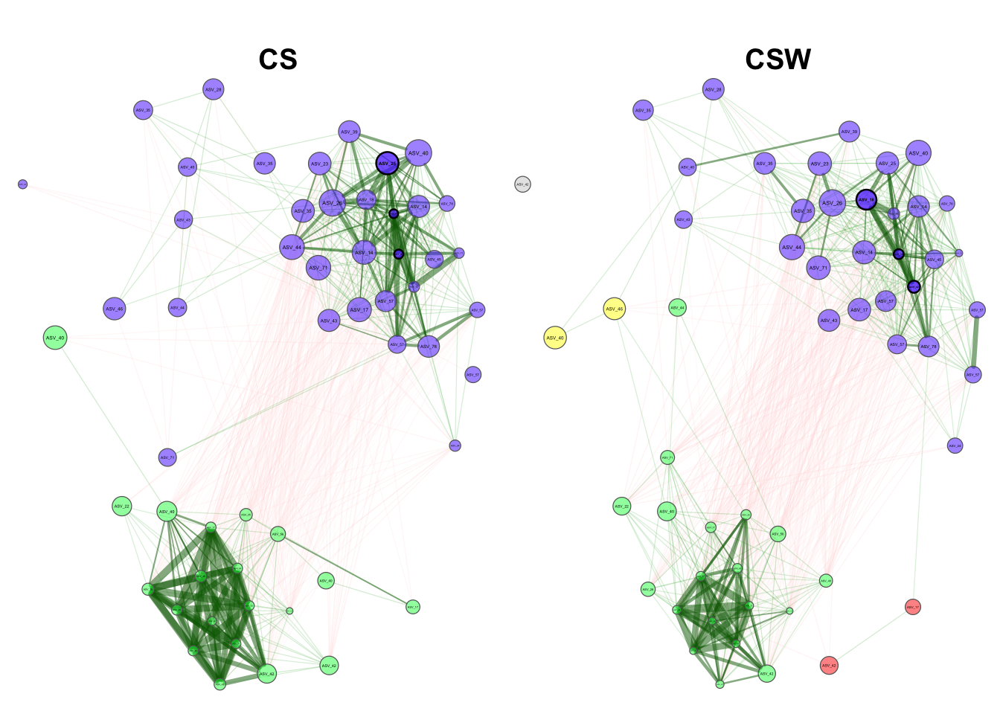
Footnotes
(you can create that dir in the dialog box if needed↩︎